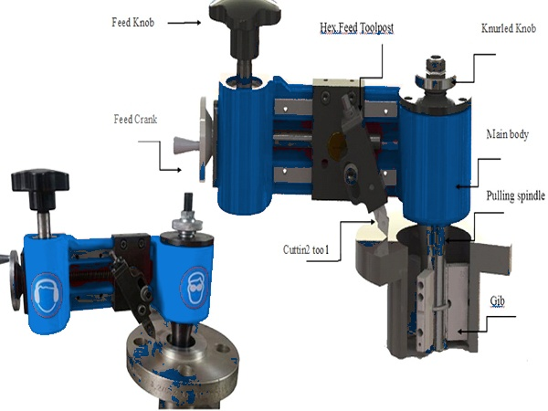
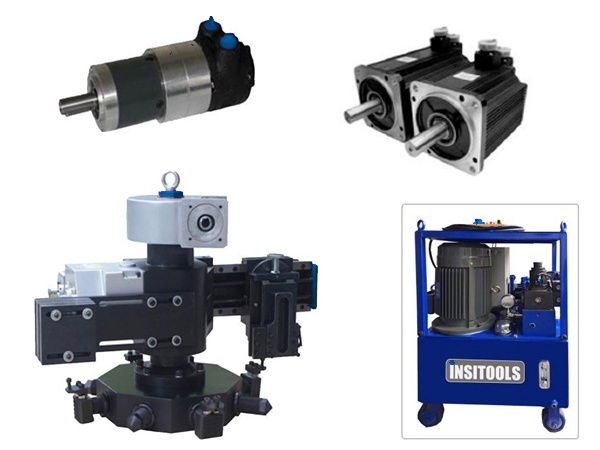
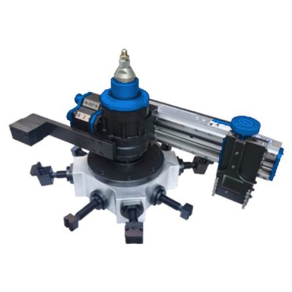
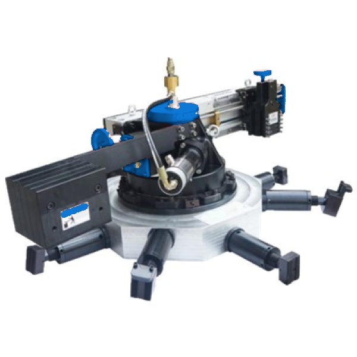

Boring Machines
5 Models Available
BB5000 Portable Boring Machine
Optimized for precision on-site compact bore machining and maintenance.

BB4500 Portable Boring Machine
Versatile mid-range heavy equipment maintenance and refurbishment machine.

BB6100 Portable Boring Machine
Robust engineering for stable high-torque pipeline and hole reaming operations.

BB7100 Heavy Boring Machine
Heavy-duty setup designed for large diameter industrial joint re-boring.

PB300super High Precision Boring
High precision on-site portable boring machine for critical applications.
Flange Facers
4 Models Available
FF5300 Flange Facer
Compact flange refacing machine designed for reliable on-site operations.

FF6300 Flange Facer
Precision pipe flange facing tool for medium-range industrial applications.

FF7200 Flange Facer
Heavy internal-mount configuration for joint refacing up to industrial scale.

FF8200 Heavy Flange Facer
Large scale pipeline joint machine with high-torque heavy-duty hydraulic drive.
Milling Machines
5 Models Available
ILMD1000 Gantry Milling Machine
Portable gantry mill with 1000 mm X-axis travel and configurable Y-axis stroke.

ILMD2000 Gantry Milling Machine
2000 mm X-axis portable gantry mill for on-site line and surface machining.

ILMD3000 Gantry Milling Machine
3000 mm X-axis travel with adjustable Y-axis configurations for large surfaces.

ILMD4000 Gantry Milling Machine
Heavy-duty 4000 mm X-axis gantry milling system with a 250 mm Z-axis stroke.

ILMD5000 Gantry Milling Machine
5000 mm X-axis portable gantry mill for large-scale on-site machining.